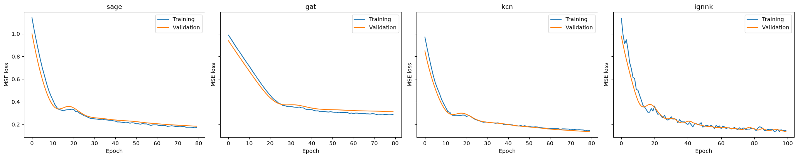
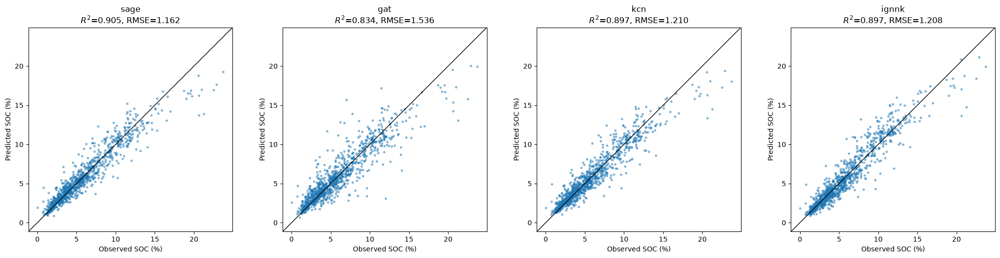
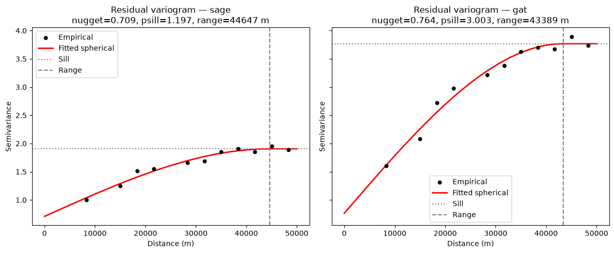
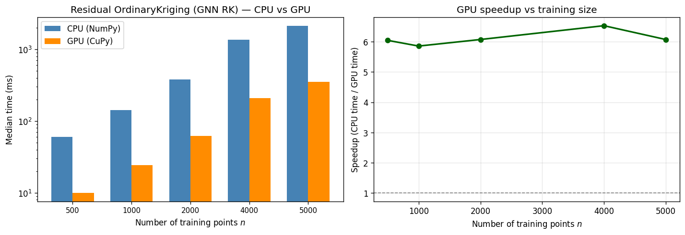

where \(\hat{m}(\mathbf{s})\) is the trend prediction and \(\hat{e}(\mathbf{s})\) is the kriged residual. Tutorials 7.1–7.3 use scikit-learn ensembles, H2O, and a PyTorch MLP for \(\hat{m}\). This notebook uses graph neural networks — models that treat sample locations as nodes in a spatial graph — via pygstat.GNNRegressionKriging, pygstat.KCN, and pygstat.IGNNK.
1.1 What a GNN is
A Graph Neural Network is a neural network that operates directly on graph-structured data: a set of nodes\(V\) (each with a feature vector \(x_v\)), a set of edges\(E\) (connections between nodes, optionally with edge features \(e_{uv}\)), and it learns a function of both the node features and the graph topology — instead of treating each sample as independent (like a standard MLP) or assuming a fixed grid/sequence (like a CNN/RNN).
The core mechanism is message passing (Gilmer et al., 2017): at each layer, every node aggregates information from its graph neighbors and updates its own representation.
starting from \(\mathbf{h}_v^{(0)} = x_v\), where \(\mathcal{N}(v)\) is \(v\)’s neighbor set and \(\bigoplus\) is a permutation-invariant aggregator (sum, mean, max, or an attention-weighted sum). After \(K\) layers, each node’s embedding \(\mathbf{h}_v^{(K)}\) has absorbed information from its \(K\)-hop neighborhood, and a small head (e.g. an MLP) maps it to a prediction: \(\hat{y}_v = \text{MLP}(\mathbf{h}_v^{(K)})\).
The classic Graph Convolutional Network (Kipf & Welling, 2017) is one concrete instance:
— each layer is literally “average your neighbors’ (and your own) features, then apply a learned linear transform and nonlinearity.” Other well-known variants: GraphSAGE (Hamilton et al., 2017 — samples/aggregates neighbors, explicitly designed to generalize to nodes never seen during training) and GAT (Veličković et al., 2018 — learns attention weights per edge instead of fixed averaging).
1.2 Can GNNs be used for spatial mapping/interpolation?
Yes, and it’s an active research area. The construction: treat each sample location as a node, connect nodes that are spatially near each other (k-nearest-neighbor graph, a distance-threshold graph, or a Delaunay triangulation), optionally weight edges by a distance kernel (e.g. \(w_{uv} = \exp(-d_{uv}^2/2\ell^2)\) — deliberately covariance-shaped), attach any covariates as node features, and train the GNN to predict the target variable at each node. To predict at an unsampled location, you add it as a new node, connect it to its nearby existing neighbors, and run one forward pass.
That last step is the crux: a transductive GNN (plain GCN) is trained on one fixed graph and doesn’t cleanly extend to brand-new nodes. For real spatial prediction you need an inductive architecture (GraphSAGE-style, or specifically designed for this), which is exactly what a couple of published methods do:
IGNNK — Inductive Graph Neural Networks for Spatiotemporal Kriging (Wu, Cui, Nie, Wang, 2021) — trains a GNN by repeatedly masking random subsets of sensor nodes and having the network reconstruct them from their neighbors, then applies it to genuinely unmonitored locations. Explicitly framed as a Kriging replacement for sensor networks (traffic, air quality).
KCN — Kriging Convolutional Networks (Appleby, Liu, Liu, 2020) — builds a GNN layer whose neighbor-aggregation is literally kriging-shaped (a learnable, distance-aware weighting), positioning itself as a direct hybrid.
So GNNs for mapping are real and used, particularly for sensor networks and non-Euclidean domains (river networks, road networks, irregular monitoring station layouts) where the graph structure carries real physical meaning beyond Euclidean distance.
1.3 How does this differ from kriging?
Kriging
GNN
Foundation
Explicit statistical model: a random function with a fitted covariance/variogram \(C(h)\)
A flexible, nonlinear function approximator fit by gradient descent; no explicit spatial-process model
Optimality
Provably the Best Linear Unbiased Estimator given the covariance model
No such guarantee — whatever minimizes the training loss
Uncertainty
Exact, analytic kriging variance from the same covariance model
Not native — needs MC dropout / deep ensembles / quantile heads bolted on, generally less calibrated
Exact interpolation
Yes (with no nugget, reproduces data exactly at sample points)
Not inherently — has to be engineered in
Data needed
Works with tens–hundreds of points; no “training,” just variogram fitting
Typically needs many nodes/graphs/timesteps to learn useful weights; small-\(n\) tends to overfit
Generalizing to new locations
Trivial and automatic — any new point just gets its own covariance vector
Requires an inductive architecture (GraphSAGE/IGNNK-style); a plain GCN doesn’t generalize to unseen nodes at all
Covariates
Regression/universal/co-kriging: linear trend + kriged residuals
Learns arbitrary nonlinear combinations of node features and graph structure jointly
Can implicitly absorb nonstationary, nonlinear relationships from data, no explicit structural machinery required
Interpretability
Fully transparent — weights, variance, and drift terms are all derivable and inspectable
Largely a black box (attention weights offer partial insight)
Cost profile
Cheap to fit (variogram), \(O(n^3)\)-ish per local estimate (or reused factorization)
Expensive to train (GPU, many epochs), cheap per-node inference afterward
The short version: kriging is a statistically principled, small-data, exact-interpolation method built on an explicit covariance model, with rigorous uncertainty quantification baked in. A GNN is a flexible, large-data, nonlinear learner that can absorb far richer covariate/topological structure (including non-Euclidean graphs like river or road networks) but gives up the statistical guarantees and needs deliberate engineering both to generalize to new nodes and to produce trustworthy uncertainty.
They’re not mutually exclusive, either — note that a GCN layer with linear (no-nonlinearity) aggregation and edge weights set to normalized covariance values is structurally a locally-weighted average very much in the spirit of kriging, just without the unbiasedness Lagrange constraint that makes kriging BLUE. And the hybrid pattern used by KCN/IGNNK is exactly the regression-kriging idea already in this repo: use a learned model (there, a GNN; in regression_kriging.py/regression_kriging_pytorch_gpu.py, an ensemble or MLP) for the large-scale trend, then krige the leftover residuals for the fine-scale spatial correlation and its variance.
GNN trend models in this notebook
pygstat wraps three inductive GNN trends. Each follows the same RK recipe: fit the GNN, krige its residuals with OrdinaryKriging, add the two back together. Graphs are \(k\)-nearest-neighbor graphs of the coordinates (scipy.spatial.cKDTree); aggregation is pure PyTorch (index_add_) — no torch_geometric dependency.
Class
Architecture
What the node sees
How new locations are predicted
GNNRegressionKriging
GraphSAGE-mean (conv_type='mean') or GAT (conv_type='gat')
Covariates only
Attach each query as a new node, connect it to its \(k\) nearest training neighbors, one forward pass
KCN
Kriging Convolutional Network (Appleby et al., 2020)
Covariates plus neighbors’ known target values, aggregated with a learnable-lengthscale Gaussian distance kernel. A node’s own target is always hidden from itself
Same inductive attach; training nodes send known values as messages, query nodes do not
IGNNK
Inductive GNN for Kriging (Wu et al., 2021), adapted from spatiotemporal sensors to static RK
[covariates, mask × value, mask]. Training randomly masks a fraction of nodes each epoch and reconstructs them
Query nodes are attached with mask=0 (unknown), training nodes remain known
This tutorial
We map soil organic carbon across the US Great Plains using 5,000 samples and a ~10 km prediction grid. NLCD land-cover class is one-hot encoded (a GNN sees a numeric matrix, same as tutorial 7.3). Samples are split stratified by NLCD into train / valid / test. All three GNN families (plus a GAT variant of the plain GNN) are fit on the training graph, scored on the test set, then used to predict SOC at grid locations. Section 13 times residual ordinary kriging on CPU vs GPU for prefixes of data/gp_data_5000.csv.
2. Mathematical Formulation
The target \(Z(\mathbf{s})\) at location \(\mathbf{s}\) is
where \(\mu(\mathbf{s})\) is a deterministic trend explained by covariates (and, for KCN/IGNNK, by neighboring observed values) and \(\varepsilon(\mathbf{s})\) is a zero-mean, spatially autocorrelated residual.
Spatial graph
Given training coordinates \(\{\mathbf{s}_i\}_{i=1}^{n}\), build a directed \(k\)-nearest-neighbor graph. For each node \(v\), the \(k\) nearest other training locations are sources; self-loops are excluded.
\[
\mathcal{N}(v) = \operatorname{kNN}(\mathbf{s}_v;\, k),\qquad
E = \bigl\{(u \to v): u \in \mathcal{N}(v)\bigr\}
\]
To predict at new locations \(\{\mathbf{s}_0\}\), attach each query as a destination whose sources are its \(k\) nearest training nodes. Query-to-query and query-to-train reverse edges are never added — this is what makes the models inductive.
Plain GNN trend (GNNRegressionKriging)
Covariates \(\mathbf{x}(\mathbf{s})\) are standardized. Each GraphSAGE-mean layer is
followed by ReLU and dropout. GAT replaces the uniform mean with learned attention weights \(\alpha_{uv}\). A linear head maps the final embedding to \(\hat{\mu}(\mathbf{s})\). New nodes receive messages from training neighbors only; they never send messages back.
KCN trend
Node features are \([\mathbf{x},\; \text{mask}\cdot y,\; \text{mask}]\). The first layer is a Kriging Convolution: neighbors are weighted by a Gaussian kernel of spatial distance with a learnable lengthscale \(\ell\),
where \(\mathbf{x}_v^{\mathrm{self}}\)always zeroes the node’s own target and mask flag (leave-self-out — otherwise the network would copy \(y_v\)), while \(\mathbf{x}_u^{\mathrm{msg}}\) reveals \(y_u\) wherever it is actually known. Further layers are ordinary mean aggregations on the resulting hidden states.
IGNNK trend
Every node carries \([\mathbf{x},\; m\cdot y,\; m]\). Each training epoch draws a random mask over a fraction mask_ratio of the non-validation nodes and trains the GNN to reconstruct those hidden values from the (partially also-masked) graph. At prediction time query nodes have \(m=0\). Residuals on the training set are computed by \(k\)-fold masked reconstruction so a node is never scored on a pass where its own \(y\) was visible.
Kriging variance \(\sigma_K^2(\mathbf{s}_0)\) is reported as a standard error when return_std=True. This is the GNN analogue of the MLP workflow in tutorial 7.3: the network captures a nonlinear, neighborhood-aware trend; kriging adds local spatial structure and a calibrated residual variance.
Why a GNN for the trend?
Method
Pros
Cons
sklearn ensembles (tutorial 7.1)
Simple Python API, native importances
Independent samples; no explicit neighborhood
H2O GLM / DRF / GBM / AutoML (tutorial 7.2)
Native categoricals, grid search
Requires Java / H2O cluster
PyTorch MLP (tutorial 7.3)
Nonlinear capacity, GPU, Optuna
Treats locations as i.i.d. given covariates
Spatial GNN (this notebook)
Uses topology; KCN/IGNNK propagate observed values; inductive to new sites
Needs enough nodes; less interpretable; extra graph hyperparameters (\(k\), mask ratio)
Graph:\(k\)-nearest neighbors in Albers metres — nearby soil profiles share climate and land-cover context
Trend: the GNN can mix a location’s own covariates with those of its neighbors (and, for KCN/IGNNK, their measured SOC)
Residuals: unmeasured soil type, management, and local climate still left for kriging
3. Python Setup
3.1 CPU and GPU
GNNRegressionKriging, KCN, and IGNNK each have two independent backends:
Argument
What it controls
device
PyTorch GNN training / inference ('cpu' or 'cuda').
use_gpu
Residual ordinary kriging covariance + solve (NumPy or CuPy).
use_gpu is:
Value
Behaviour
'auto' (default)
GPU when CuPy can run a kernel on this card. Falls back to CPU otherwise.
True
Force GPU. Warns and falls back to CPU if CuPy is missing or cannot run a kernel.
False
Always CPU (NumPy/SciPy).
This notebook probes the GPU once with cupy_gpu_usable() (a real op, not just import cupy) and stores the result in USE_GPU. Every GNN regression-kriging constructor below passes use_gpu=USE_GPU. The GNN still uses device=DEVICE (PyTorch CUDA, which can be unavailable even when CuPy works).
Install CuPy with pip install pygstat[gpu] (CUDA 11) or pip install cupy-cuda12x for CUDA 12.
Section 13 times residual OK (the kriging step inside the GNN RK classes) on both backends using prefixes of data/gp_data_5000.csv.
Code
%matplotlib inlineimport osimport sysimport warningsfrom collections import Counterfrom pathlib import Path# pygstat optionally imports TensorFlow for DeepRegressionKrigingTF.# Loading that stack in the same process as PyTorch can crash; keep TF out.sys.modules.setdefault("tensorflow", None)sys.path.insert(0, os.path.abspath("../src"))import geopandas as gpdimport matplotlib.pyplot as pltimport numpy as npimport pandas as pdimport torchfrom sklearn.metrics import mean_absolute_error, mean_squared_error, r2_scorefrom sklearn.model_selection import train_test_splitfrom sklearn.preprocessing import OneHotEncoderfrom IPython.display import displayimport pygstatfrom pygstat import GNNRegressionKriging, IGNNK, KCN, Variogramfrom pygstat.utils.backend import CUPY_AVAILABLE, cupy_gpu_usablewarnings.filterwarnings("ignore", category=UserWarning)pd.set_option("display.float_format", lambda v: f"{v:0.3f}")print("torch version :", torch.__version__)print("CUDA available:", torch.cuda.is_available())DEVICE ="cpu"if torch.cuda.is_available(): major, minor = torch.cuda.get_device_capability(0)print("GPU :", torch.cuda.get_device_name(0), f"(sm_{major}{minor})")# This wheel ships kernels for sm_75+; older cards fall back to CPU.if (major, minor) >= (7, 5): DEVICE ="cuda"else:print("GPU compute capability is below sm_75; using CPU")print("Using device :", DEVICE)# ── Residual OK: CPU / GPU dispatch (CuPy; independent of PyTorch DEVICE) ─────# cupy_gpu_usable() runs a real kernel (not just `import cupy`). Older cards can# import CuPy and still fail at compile time; those stay on CPU.print(f"pygstat version : {pygstat.__version__}")USE_GPU = cupy_gpu_usable()if USE_GPU:import cupy as cpprint(f"CuPy : {cp.__version__}")try: name = cp.cuda.runtime.getDeviceProperties(0)["name"]ifisinstance(name, bytes): name = name.decode()print(f"GPU (CuPy) : {name}")exceptException:print("GPU (CuPy) : available")print("Backend : GPU (CuPy) — residual OK covariance + solve on GPU")else:if CUPY_AVAILABLE:import cupy as cpprint(f"CuPy : {cp.__version__} (installed, but cannot run a kernel on this GPU/CUDA setup)")else:print("CuPy : not installed (pip install pygstat[gpu] or cupy-cuda12x)")print("Backend : CPU (NumPy)")print(f"use_gpu : {USE_GPU}")
torch version : 2.13.0+cu132
CUDA available: False
Using device : cpu
pygstat version : 0.1.0
CuPy : 14.2.0
GPU (CuPy) : NVIDIA GeForce RTX 2080 Ti
Backend : GPU (CuPy) — residual OK covariance + solve on GPU
use_gpu : True
4. Load and Explore the Great Plains Data
Point samples live in data/gp_data_5000.csv (SOC plus covariates at 5,000 locations). The prediction grid is data/gp_grid.csv (covariates only). Coordinates are US Albers Equal Area (EPSG:5070), in metres.
The CSV header repeats NLCD; pandas renames the second copy to NLCD.1. That extra column is dropped. The first NLCD column matches the grid (classes 3–7).
Unlike tutorial 7.2, NLCD is not a native H2O factor. A GNN (like the PyTorch MLP in tutorial 7.3) sees a numeric matrix, so land cover is one-hot encoded:
OneHotEncoder(drop="first") creates dummy columns and drops the first class as the baseline.
The encoder is fit on the sample table and applied to the prediction grid (handle_unknown="ignore").
A 60% / 20% / 20% split, stratified by NLCD so each land-cover class appears in train, valid, and test (random_state=42).
Train + valid — passed to fit(). Each GNN builds its \(k\)-NN graph on these coordinates and carves an internal validation subset (val_fraction) for early stopping. Residual kriging is fit on the same coordinates.
Test — untouched hold-out used only after the four GNN families are compared
The GNN fit() API does not take a separate X_val tensor (unlike DeepRegressionKriging in tutorial 7.3): validation nodes stay in the graph so they can send messages, but they are excluded from the training loss.
Before residual kriging, look at the raw SOC variogram on the training coordinates. Lag count uses Scott’s rule on pairwise distances, capped at 30 lags: bin width \(h = 3.5 \, \mathrm{std}\,/\, n^{1/3}\).
Residual variograms (next section) typically have a shorter range than the raw SOC variogram, because the regression has already absorbed the large-scale trend. Residual models use maxlag=50 km and 15 lags — the same setting as tutorials 7.1–7.3.
8. Fit GNN Regression-Kriging Models
Four trend families are fit on the same train+valid graph (coords_fit):
sage — GNNRegressionKriging(conv_type='mean'), GraphSAGE-style mean aggregation of covariates.
gat — same class with conv_type='gat': learned attention weights per edge (Veličković et al., 2018).
kcn — KCN: leave-self-out Gaussian-kernel convolution of neighbors’ known SOC (Appleby et al., 2020).
ignnk — IGNNK: random-mask reconstruction so the trend generalizes to never-seen nodes (Wu et al., 2021).
Hyperparameters follow tests/test_regression_kriging_gnn.py (full-dataset settings), with a slightly larger epoch budget for the tutorial. Residual variograms use a spherical model, maxlag=50 km, 15 lags.
Training curves for each fitted GNN. Validation loss is the early-stopping signal (val_fraction=0.15 of the fit-graph nodes, held out of the training loss but still present in the graph).
Code
n =len(fitted)fig, axes = plt.subplots(1, n, figsize=(5.2* n, 4.2), sharey=True)if n <=1: axes = [axes]for ax, (name, rk) inzip(np.atleast_1d(axes).ravel(), fitted.items()): ax.plot(rk.train_losses_, label="Training")if rk.val_losses_ isnotNone: ax.plot(rk.val_losses_, label="Validation") ax.set_xlabel("Epoch") ax.set_ylabel("MSE loss") ax.set_title(name) ax.legend()plt.tight_layout()plt.show()

A subsample of the \(k\)-NN training graph (GraphSAGE / KCN / IGNNK share the same construction). Edges point from each node’s \(k\) nearest neighbors; the map uses the sage model’s stored edge_index_.
The models above never saw the test coordinates. For each family we report RMSE, MAE, and \(R^2\) of the full RK prediction (GNN trend + kriged residual) on the 20% test set.
Code
rows = []for name, rk in fitted.items(): y_hat = rk.predict(X_test, coords_test) rows.append({"family": name,"class": type(rk).__name__,"k_neighbors": rk.k_neighbors,"n_layers": rk.n_layers,"hidden_dim": rk.hidden_dim,"epochs": len(rk.train_losses_),"test_rmse": float(np.sqrt(mean_squared_error(y_test, y_hat))),"test_mae": float(mean_absolute_error(y_test, y_hat)),"test_r2": float(r2_score(y_test, y_hat)),"y_pred_test": y_hat, })results = pd.DataFrame(rows).drop(columns=["y_pred_test"])results = results.sort_values("test_rmse").reset_index(drop=True)best_name = results.loc[0, "family"]display(results)print(f"Best family by test RMSE: {best_name}")
One-to-one plots for the best family and the other fitted GNNs.
Code
show = [best_name]for extra in ("sage", "gat", "kcn", "ignnk"):if extra in fitted and extra notin show: show.append(extra)pred_lookup = {row["family"]: row for row in rows}fig, axes = plt.subplots(1, len(show), figsize=(5.2*len(show), 5.0))iflen(show) ==1: axes = [axes]lims = [min(y_test.min(), min(pred_lookup[n]["y_pred_test"].min() for n in show)),max(y_test.max(), max(pred_lookup[n]["y_pred_test"].max() for n in show)),]pad =0.05* (lims[1] - lims[0])lims = [lims[0] - pad, lims[1] + pad]for ax, name inzip(axes, show): y_hat = pred_lookup[name]["y_pred_test"] ax.scatter(y_test, y_hat, s=12, alpha=0.55, edgecolors="none") ax.plot(lims, lims, color="black", linewidth=1) ax.set_xlim(lims) ax.set_ylim(lims) ax.set_aspect("equal", adjustable="box") ax.set_xlabel("Observed SOC (%)") ax.set_ylabel("Predicted SOC (%)") r2 = pred_lookup[name]["test_r2"] rmse = pred_lookup[name]["test_rmse"] ax.set_title(f"{name}\n$R^2$={r2:.3f}, RMSE={rmse:.3f}")plt.tight_layout()plt.show()

Residual variograms of two trend models
The residual variogram depends on the trend: a better neighborhood-aware GNN typically leaves less structured residual spatial variation (smaller sill / shorter range).
Code
pair = [n for n in (best_name, "sage") if n in fitted]pair =list(dict.fromkeys(pair))iflen(pair) <2: pair =list(fitted.keys())[:2]fig, axes = plt.subplots(1, 2, figsize=(12, 5), sharey=True)for ax, name inzip(axes, pair): vg_r = fitted[name].variogram_ h_fine = np.linspace(0, vg_r.maxlag, 200) ax.scatter(vg_r.lags, vg_r.experimental, color="black", s=22, label="Empirical", zorder=3) ax.plot(h_fine, vg_r(h_fine), color="red", linewidth=2, label="Fitted spherical") c0, c, a = vg_r.fitted_params ax.axhline(c0 + c, color="gray", linestyle=":", label="Sill") ax.axvline(a, color="gray", linestyle="--", label="Range") ax.set_xlabel("Distance (m)") ax.set_ylabel("Semivariance") ax.set_title(f"Residual variogram — {name}\nnugget={c0:.3f}, psill={c:.3f}, range={a:.0f} m") ax.legend()plt.tight_layout()plt.show()

10. Feature Importance
A GNN has no native split-based importances. We report permutation importance on the test set: each encoded feature is shuffled in turn, and the increase in RK RMSE is the importance. Residuals depend only on coordinates, so permuting \(X\) isolates the trend contribution. For KCN/IGNNK the neighborhood still carries observed SOC, so permutation of covariates understates the role of the graph itself.
Each fitted family predicts at the gp_grid.csv nodes. For the best family we also store the regression-only surface, kriged residuals, and kriging standard error.
Code
print("Predicting SOC on the grid for every GNN family ...")for name, rk in fitted.items(): grid_df[f"SOC_{name}"] = rk.predict(X_grid, coords_grid)best_rk = fitted[best_name]soc_best, se_best = best_rk.predict(X_grid, coords_grid, return_std=True)grid_df["SOC_best"] = soc_bestgrid_df["SOC_best_se"] = se_best# Regression-only trend = RK prediction minus kriged residualgrid_df["resid_best"] = best_rk.krige_.predict(coords_grid)grid_df["reg_best"] = grid_df["SOC_best"] - grid_df["resid_best"]print(grid_df[["x", "y", "SOC_best", "SOC_best_se", "reg_best", "resid_best"]].describe())
Predicting SOC on the grid for every GNN family ...
x y SOC_best SOC_best_se reg_best resid_best
count 10674.000 10674.000 10674.000 10674.000 10674.000 10674.000
mean -753412.225 1757164.871 5.988 0.722 5.987 0.001
std 327749.190 382369.477 3.564 0.560 3.357 1.131
min -1245285.000 1003795.000 0.297 0.000 0.780 -11.434
25% -1005285.000 1503795.000 3.288 0.000 3.431 -0.546
50% -825285.000 1743795.000 5.066 1.118 5.081 -0.019
75% -625285.000 2023795.000 8.034 1.160 7.895 0.481
max 114715.000 2533795.000 23.664 1.360 19.937 10.152
Code
out_path = DATA_DIR /"gp_prediction_RK_gnn.csv"grid_df.to_csv(out_path, index=False)print(f"Grid predictions saved to {out_path}")
Grid predictions saved to ../data/gp_prediction_RK_gnn.csv
12. Map Predictions
Points are plotted in EPSG:5070 with Great Plains state boundaries (data/GP_STATE.shp).
Section 3.1 showed how to select a backend. Here we measure how long residual ordinary kriging — the spatial step inside GNNRegressionKriging / KCN / IGNNK — takes on CPU (use_gpu=False, NumPy/SciPy) versus GPU (use_gpu=True, CuPy) for prefixes of the Great Plains SOC survey (data/gp_data_5000.csv, \(n\) up to 5{,}000).
The GNN trend uses device=DEVICE and is not part of these timings (training a GNN at every \(n\) would dwarf the kriging solve). The GPU-accelerated steps are the \(n \times n\) residual covariance among training points, the \(n_{\text{pred}} \times n\) covariance to the targets, and the linear solve of the augmented OK system. A linear trend (a GNN analogue for residual extraction) is fit once per prefix; that fit and the residual variogram are not included in the OK times.
Two practical notes:
Small \(n\) and few targets (a few hundred training and prediction points) often shows little GPU gain: host→device copies and kernel-launch overhead dominate.
Larger \(n\), or a dense prediction grid, is where the GPU pays off: the OK system scales as \(O(n^3)\) for the solve and \(O(n \cdot n_{\text{pred}})\) for the target covariances.
Each timing is the median of three OrdinaryKriging.fit + predict(..., return_variance=True) calls after a short GPU warmup so CUDA kernel compilation is not counted. If CuPy cannot run a kernel here, the GPU column is skipped and only CPU times are reported.
Code
import timefrom sklearn.linear_model import LinearRegressionfrom pygstat import OrdinaryKrigingN_REPEATS =3N_PRED_GP =500GP_SIZES = [500, 1000, 2000, 4000, 5000]rng_bench = np.random.default_rng(42)pred_idx = rng_bench.choice(len(coords_grid), size=N_PRED_GP, replace=False)xy_pred_b = coords_grid[pred_idx]def _residual_variogram(X_tr, y_tr, xy_tr):"""Linear trend (CPU); residual field is what OK interpolates.""" lin = LinearRegression().fit(np.asarray(X_tr, dtype=float), y_tr) resid = y_tr - lin.predict(np.asarray(X_tr, dtype=float)) vg_kw =dict(VARIOGRAM_KWARGS) vg_kw.pop("use_gpu", None)return Variogram( np.asarray(xy_tr, dtype=float), np.asarray(resid, dtype=float), model="spherical", estimator="matheron", use_gpu=False,**vg_kw, ).fit(), residdef _time_ok(xy_train, z_train, xy_pred, vg, use_gpu, repeats=N_REPEATS, warmup=True):"""Median wall time of OrdinaryKriging.fit + predict(return_variance=True)."""if warmup: k_tr =min(40, len(xy_train)) k_pr =min(40, len(xy_pred)) OrdinaryKriging(vg, use_gpu=use_gpu).fit( xy_train[:k_tr], z_train[:k_tr] ).predict(xy_pred[:k_pr], return_variance=True)if use_gpu:import cupy as cp cp.cuda.Device(0).synchronize() times = [] last =Nonefor _ inrange(repeats): t0 = time.perf_counter() ok_m = OrdinaryKriging(vg, use_gpu=use_gpu).fit(xy_train, z_train) last = ok_m.predict(xy_pred, return_variance=True)if use_gpu:import cupy as cp cp.cuda.Device(0).synchronize() times.append(time.perf_counter() - t0)returnfloat(np.median(times)), lastprint(f"GPU usable : {USE_GPU}")print(f"Repeats : {N_REPEATS} (median wall time of residual OK fit + predict)")print(f"GP SOC : {len(y)} samples from data/gp_data_5000.csv")print("Trend : linear (GNN analogue; residual OK uses use_gpu)")print(f"GP n_pred : {N_PRED_GP} grid locations")print()rows = []for n in GP_SIZES: X_tr = np.asarray(X[:n], dtype=float) y_tr = y[:n] xy_tr = coords[:n] vg, resid = _residual_variogram(X_tr, y_tr, xy_tr) cpu_t, pred_cpu = _time_ok(xy_tr, resid, xy_pred_b, vg, use_gpu=False) row = {"dataset": "GP (SOC)","n_train": n,"n_pred": N_PRED_GP,"CPU (s)": cpu_t,"GPU (s)": np.nan,"speedup": np.nan,"match": "—", }if USE_GPU: gpu_t, pred_gpu = _time_ok(xy_tr, resid, xy_pred_b, vg, use_gpu=True) row["GPU (s)"] = gpu_t row["speedup"] = cpu_t / gpu_t z_c, se_c = pred_cpu z_g, se_g = pred_gpu row["match"] =bool( np.allclose(z_c, z_g, rtol=1e-4, atol=1e-4, equal_nan=True)and np.allclose(se_c, se_g, rtol=1e-4, atol=1e-4, equal_nan=True) )import cupy as cp cp.get_default_memory_pool().free_all_blocks() rows.append(row)df_bench = pd.DataFrame(rows)df_show = df_bench.copy()df_show["CPU (ms)"] = (df_show["CPU (s)"] *1000).round(1)df_show["GPU (ms)"] = (df_show["GPU (s)"] *1000).round(1)df_show["speedup"] = df_show["speedup"].map(lambda x: "—"if pd.isna(x) elsef"{x:.2f}×")print(df_show[["dataset", "n_train", "n_pred", "CPU (ms)", "GPU (ms)", "speedup", "match"]].to_string(index=False))fig, axes = plt.subplots(1, 2, figsize=(12, 4.2))n_vals = df_bench["n_train"].to_numpy()cpu_ms = df_bench["CPU (s)"].to_numpy() *1000gpu_ms = df_bench["GPU (s)"].to_numpy() *1000labels = [str(int(n)) for n in n_vals]x = np.arange(len(n_vals))w =0.36axes[0].bar(x - w /2, cpu_ms, w, label="CPU (NumPy)", color="steelblue")if USE_GPU and np.isfinite(gpu_ms).all(): axes[0].bar(x + w /2, gpu_ms, w, label="GPU (CuPy)", color="darkorange")axes[0].set_xticks(x)axes[0].set_xticklabels(labels, fontsize=9)axes[0].set_xlabel("Number of training points $n$")axes[0].set_ylabel("Median time (ms)")axes[0].set_title("Residual OrdinaryKriging (GNN RK) — CPU vs GPU")axes[0].legend()axes[0].set_yscale("log")if USE_GPU: axes[1].plot(n_vals, df_bench["speedup"], "o-", color="darkgreen", lw=2) axes[1].axhline(1.0, color="grey", ls="--", lw=1) axes[1].set_xlabel("Number of training points $n$") axes[1].set_ylabel("Speedup (CPU time / GPU time)") axes[1].set_title("GPU speedup vs training size") axes[1].grid(True, alpha=0.3)else: axes[1].text(0.5, 0.5,"GPU not usable in this environment\nCPU-only timings shown", ha="center", va="center", transform=axes[1].transAxes, ) axes[1].set_axis_off()plt.tight_layout()plt.show()
GPU usable : True
Repeats : 3 (median wall time of residual OK fit + predict)
GP SOC : 5000 samples from data/gp_data_5000.csv
Trend : linear (GNN analogue; residual OK uses use_gpu)
GP n_pred : 500 grid locations
dataset n_train n_pred CPU (ms) GPU (ms) speedup match
GP (SOC) 500 500 60.1 9.9 6.04× True
GP (SOC) 1000 500 142.8 24.4 5.86× True
GP (SOC) 2000 500 378.0 62.3 6.07× True
GP (SOC) 4000 500 1358.0 208.0 6.53× True
GP (SOC) 5000 500 2136.5 351.9 6.07× True

Predictions and residual-kriging standard errors from the two backends should match (match = True). The GNN trend is independent of this comparison; the GPU speedup comes from the residual OK covariance build and solve. On the Great Plains SOC prefixes the \(O(n^2)\) covariance and \(O(n^3)\) solve keep the GPU several times faster as \(n\) grows to 5{,}000. Use use_gpu=USE_GPU (as the rest of this notebook does) so the same cells run on a laptop CPU or a CUDA workstation without edits.
14. Summary and Conclusions
This notebook applied regression kriging to Great Plains soil organic carbon with graph neural network trends (pygstat.GNNRegressionKriging, KCN, IGNNK).
Data. 5,000 samples (gp_data_5000.csv) and a 10 km grid (gp_grid.csv). NLCD is a categorical land-cover class, dummy-encoded with OneHotEncoder(drop="first") rather than treated as an ordinal score.
Graph. Each sample is a node; edges are \(k\)-nearest neighbors in Albers metres (\(k=12\)). New grid nodes are attached inductively to training neighbors only.
Split. NLCD-stratified 60% train / 20% valid / 20% test. Train+valid form the GNN graph; an internal val_fraction provides early stopping; test is used only for the final comparison.
Families.GraphSAGE-mean, GAT, KCN (leave-self-out Gaussian-kernel convolution of neighbor SOC), and IGNNK (random-mask reconstruction) were each scored on the test set. The best of the four was used to map SOC on the grid.
Mapping. SOC, the GNN trend, kriged residuals, and kriging standard error were written to data/gp_prediction_RK_gnn.csv.
CPU / GPU. Residual ordinary kriging (use_gpu=USE_GPU) was timed on prefixes of gp_data_5000.csv. The GNN uses device=DEVICE; the \(O(n^2)\) covariance and \(O(n^3)\) OK solve are the CuPy-accelerated steps.
Regression kriging with a GNN trend is a practical workflow when you want neighborhood-aware nonlinear capacity (and, with KCN/IGNNK, propagation of observed values along the spatial graph) plus geostatistical residuals on the same spatial support. It does not replace kriging’s BLUE guarantee or analytic variance — that is still the residual-kriging step.
15. Resources
Papers and books
Reference
Notes
Gilmer, J. et al. (2017). Neural message passing for quantum chemistry. ICML.
Message-passing framework used in §1.1
Kipf, T.N. & Welling, M. (2017). Semi-supervised classification with graph convolutional networks. ICLR.
Classic GCN layer
Hamilton, W.L., Ying, R. & Leskovec, J. (2017). Inductive representation learning on large graphs. NeurIPS.
GraphSAGE; inductive aggregation
Veličković, P. et al. (2018). Graph attention networks. ICLR.
GAT (conv_type='gat')
Appleby, G., Liu, L. & Liu, L. (2020). Kriging convolutional networks. AAAI. arXiv:1907.05003
KCN: distance-kernel, leave-self-out convolution
Wu, Y., Cui, D., Nie, F. & Wang, H. (2021). Inductive graph neural networks for spatiotemporal kriging. AAAI. arXiv:2006.07527
IGNNK: random-mask reconstruction
Hengl, T., Heuvelink, G.B.M. & Stein, A. (2004). A generic framework for spatial prediction of soil variables based on regression-kriging. Geoderma 120, 75–93.
RK as used in digital soil mapping
Hengl, T., Heuvelink, G.B.M. & Rossiter, D.G. (2007). About regression-kriging: from equations to case studies. Computers & Geosciences 33, 1301–1315.
Practical RK workflow
Goovaerts, P. (1997). Geostatistics for Natural Resources Evaluation. Oxford University Press.
SK with a varying local mean
In this library
Object
Role
pygstat.GNNRegressionKriging
Covariate-only spatial GNN trend + ordinary kriging of residuals (use_gpu)
conv_type='mean' / 'gat'
GraphSAGE-style mean aggregation vs. graph attention
IGNNK: fraction of nodes hidden each training epoch
fit(..., val_fraction=)
Internal early-stopping split; validation nodes stay in the graph
predict(..., return_std=True)
RK prediction plus residual kriging standard error
variogram_, krige_, train_losses_, val_losses_
Fitted residual variogram, OK model, and training curves
pygstat.Variogram
Residual (and exploratory) variogram
Install extras with pip install pygstat[pytorch]. Residual OK uses use_gpu=USE_GPU (CuPy). Set device='cuda' to force a PyTorch GPU, or leave device='auto' (used here via DEVICE) to fall back to CPU when CUDA is unavailable. Related tutorials: 6.1 scikit-learn RK, 6.2 H2O RK, 6.3 PyTorch MLP RK, 6.4 TensorFlow DNN RK.